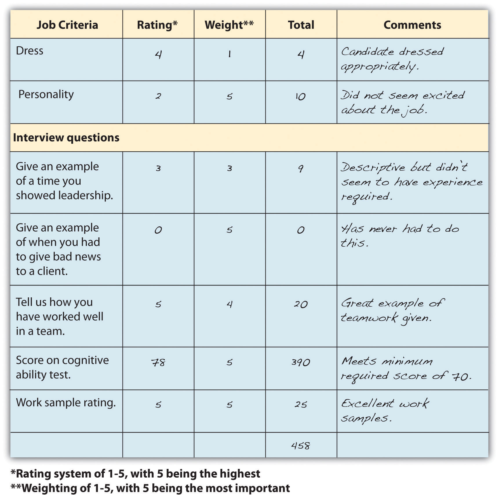

Besides the interview, we can also look at several other aspects that may predict success on the job. If any test is to be criteria for measuring a candidate, this should be communicated to each person interviewing, and criteria should be developed on specific test scores and expectations before interviewing and testing begins.
A variety of tests may be given upon successful completion of an interview. These employment tests can gauge a person’s KSAOs in relation to another candidate. The major categories of tests include the following:
A number of written tests can be administered. A cognitive ability testMeasures a candidate’s aptitudes or achievements. can measure reasoning skills, math skills, and verbal skills. An aptitude testMeasures a person’s ability to learn new skills. measures a person’s ability to learn new skills, while an achievement testMeasures someone’s current knowledge. measures someone’s current knowledge. Depending on the type of job, one or both will be better suited.
A cognitive ability test measures intelligences, such as numerical ability and reasoning. The Scholastic Aptitude Test (SAT) is an example of a cognitive ability test. It is important to note that some cognitive ability tests can have disparate impact. For example, in EEOC v. Ford Motor Co. and United Automobile Workers of America, African Americans were rejected from an apprentice program after taking a cognitive test known as the Apprenticeship Training Selection System (ATSS).“Employment Tests and Selection Procedures,” US Equal Employment Opportunity Commission, accessed August 2, 2011, http://www.eeoc.gov/policy/docs/factemployment_procedures.html. The test showed significant disparate impact on African Americans, and it was then replaced by a different selection procedure, after costing Ford $8.55 million. Some sample test categories might include the following:
Aptitude tests can measure things such as mechanical aptitude and clerical aptitude (e.g., speed of typing or ability to use a particular computer program). Usually, an aptitude test asks specific questions related to the requirements of the job. To become a New York City police offer, for example, an aptitude test is required before an application will be considered. The written exam is given as a computerized test at a computerized testing center in the city. The test measures cognitive skills and observational skills (aptitude test) required for the job.“Exam Schedule,” New York Police Department, accessed August 2, 2011, http://www.nypdrecruit.com/exam-center/exam-overview.
Personality tests such as Meyers-Briggs and the “Big Five” personality factors may be measured and then compared with successful employee scores. For example, The University of Missouri Health Care system recently launched a patient satisfaction initiative as part of its strategic plan. The plan includes training for current employees and personality testing for nursing, managerial, and physician candidates.Janese Silvey, “MU Health Care to Renew Satisfaction Effort,” Columbia Daily Tribune, August 2, 2011, accessed August 2, 2011, http://www.columbiatribune.com/news/2011/aug/02/mu-health-care-to-renew-satisfaction-effort/. The goal of the test is to assess talent and to see if the candidate has the potential to meet the expectations of patients. They hired a private company, Talent Plus, who conducts the test via phone interviews. However, many companies administer tests themselves, and some tests are free and can be administered online.
The Big Five personality test looks at extroversion, agreeableness, conscientiousness, neuroticism, and openness. Self-assessment statements might include the following:
Some institutions also require physical ability tests; for example, to earn a position in a fire department, you may have to be able to carry one hundred pounds up three flights of stairs. If you use tests in your hiring processes, the key to making them useful is to determine a minimum standard or expectation, specifically related to the requirements of the job. An HR manager should also consider the legality of such tests. In the EEOC v. Dial Corp. case,“Employment Tests and Selection Procedures,” US Equal Employment Opportunity Commission, accessed August 2, 2011, http://www.eeoc.gov/policy/docs/factemployment_procedures.html. women were disproportionately rejected for entry-level positions. Prior to the test, 46 percent of hires were women, but after implementation of the test, only 15 percent of the new hires were women. The Equal Employment Opportunity Commission (EEOC) established that the test was considerably more difficult than the job, resulting in disparate impact. Physical ability tests need to show direct correlation with the job duties.
A job knowledge testMeasures the candidate’s level of understanding about a particular job. measures the candidate’s level of understanding about a particular job. For example, a job knowledge test may require an engineer to write code in a given period of time or may ask candidates to solve a case study problem related to the job.
Work sample testsAn employment test that asks candidates to show examples of work they have already done. ask candidates to show examples of work they have already done. In the advertising business, this may include a portfolio of designs, or for a project manager, this can include past project plans or budgets. When applying for a pharmaceutical representative position, a “brag book” might be required.Katharine Hansen, “So, You Want to Get into Paramedical Sales?” n.d., Quintessential Careers, accessed August 2, 2011, http://www.quintcareers.com/pharmaceutical_sales_careers.html. A brag book is a list of recommendation letters, awards, and achievements that the candidate shares with the interviewer. Work sample tests can be a useful way to test for KSAOs. These work samples can often be a good indicator of someone’s abilities in a specific area. As always, before looking at samples, the interviewer should have specific criteria or expectations developed so each candidate can be measured fairly.
Once the interview is completed and testing occurs, other methods of checking KSAOs, including checking references, driving records, and credit history, can be performed. Some companies even use Facebook as a way of gauging the candidate’s professionalism.
Reference checking is essential to verify a candidate’s background. It is an added assurance that the candidate’s abilities are parallel with what you were told in the interview. While employment dates and job titles can be verified with previous employers, many employers will not verify more than what can be verified in the employment record because of privacy laws. However, if you do find someone who is willing to discuss more than just dates and job titles, a list of questions is appropriate. Some of these questions might include the following:
If a candidate will be driving a company car or vehicle, such as a UPS truck, driving records may be checked. Criminal background checks may also be used if the position will include interaction with the public. If the position requires handling of money, a credit check may be required, although a written notice is required to be given to the candidate before the credit check is carried out. In addition, written permission must be provided to the credit agency, and the applicants must receive a copy of the report and a copy of their rights under the Consumer Credit Reporting Reform Act (CCRRA). All these types of tests can be used to determine if someone has been honest about their past employment.
Some companies require drug testing, which causes some debate. While some organizations say this is a safety issue (and pay lower insurance premiums), others say it is an invasion of privacy. As long as drug tests are administered for a defensible reason (safety), many organizations will continue to require them. Some organizations will also require physical examinations to ensure the candidate can perform the tasks required. A final form of testing is the honesty test. A number of “what would you do” questions are asked. The challenge with this type of test is that many people know the “right” answer but may not be honest in their responses.
Table 5.2 Reasons Why Employers Acted upon Data Found on Social Networking Sites
| Provocative or inappropriate photos or info | 53% |
| Drinking or drug use | 44% |
| Badmouthing previous employer, colleague, or client | 35% |
| Poor communication skills | 29% |
| Discriminatory comments | 26% |
| Lied about qualifications | 24% |
| Leaked confidential information about previous job | 20% |
Source: Kit Eaton “If You’re Applying for a Job, Censor Your Facebook Page,” Fast Company, August 19, 2009, accessed January 27, 2011, http://www.fastcompany.com/blog/kit-eaton/technomix/if-youre-applying-job-censor-your-facebook-page.
Forty-five percent of organizations use social networking such as Facebook, Twitter, or LinkedIn to gather information about potential candidates.Kit Eaton, “If You’re Applying for a Job, Censor Your Facebook Page,” Fast Company, August 19, 2009, accessed January 27, 2011, http://www.fastcompany.com/blog/kit-eaton/technomix/if-youre-applying-job-censor-your-facebook-page. See Table 5.2 "Reasons Why Employers Acted upon Data Found on Social Networking Sites" for the types of data found on social networking sites that disqualified candidates, according to an article by Fast Company. This can be an effective method to see the kind of image the candidate portrays in his or her personal time.
How to answer that famous “tell me about yourself” question in an interview.
A clinical selection approachThe decision makers review the data and, based on what they learn from the candidate and the information available to them, decide who should be hired for a job. is probably the most common selection method, and it involves all who will be making the decision to hire a candidate. The decision makers review the data and, based on what they learn from the candidate and the information available to them, decide who should be hired for a job. Because interviewers have a different perception about the strengths of a candidate, this method leaves room for error. One consideration is disparate treatment, in which one’s biases may result in not hiring candidates based on their age, race, or gender. One way to handle this and limit the personal stereotypes and perceptions of the interviewers is to use a statistical methodA selection method in which a selection model is developed that assigns scores and weights on various factors, such as personality, answers to interview questions, and test scores. in hiring.
In the statistical method, a selection model is developed that assigns scores and gives more weight to specific factors, if necessary. For example, for some jobs, the ability to work in a team might be more important, while in others, knowledge of a specific computer program is more important. In this case, a weight can be assigned to each of the job criteria listed. For example, if the job is a project manager, ability to work with the client might be more important than how someone dresses for the interview. So, in the example shown in Figure 5.4 "Sample Selection Model, with Sample Scores and Weighting Filled In", dress is weighted 1, while being able to give bad news to a client is weighted 5. In the example, the rating is multiplied by the weight to get the score for the particular job criteria. This method allows for a fairer process and can limit disparate treatment, although it may not limit disparate impact. A statistical method may work like this: you and the hiring team review the job analysis and job description and then determine the criteria for the job. You assign weights for each area and score ranges for each aspect of the criteria, rate candidates on each area as they interview, and then score tests or examine work samples. Once each hiring manager has scored each candidate, the hiring team can compare scores in each area and hopefully hire the best person in the best way. A sample candidate selection model is included in Figure 5.4 "Sample Selection Model, with Sample Scores and Weighting Filled In".
With the statistical approach, there is more objectivity than with the clinical approach. Statistical approaches include the compensatory model, multiple cutoff model, and the multiple hurdle model. In the compensatory modelA statistical method of scoring applicants, this model permits a high score in an important area to make up for a lower score in another area., a similar method of scoring is used as the weighted model but permits a high score in an important area to make up for a lower score in another area. In our Figure 5.4 "Sample Selection Model, with Sample Scores and Weighting Filled In" example, ability to give bad news to a client might outweigh a test score. These decisions would be made before the interviews happen.
A multiple cutoff modelA statistical method of scoring applicants that requires a candidate to have a minimum score level on all selection criteria. requires that a candidate has a minimum score level on all selection criteria. In our Figure 5.4 "Sample Selection Model, with Sample Scores and Weighting Filled In" example, the candidate may be required to have a score of at least 2 out of 5 on each criteria. If this was the case, the candidate in Figure 5.4 "Sample Selection Model, with Sample Scores and Weighting Filled In" scored low on “bad news to a client,” meaning he or she wouldn’t get the job in a multiple cutoff model. In the multiple hurdle modelA statistical method of scoring applicants that allows only candidates with high (preset) scores to go to the next stages of the selection process., only candidates with high (preset) scores go to the next stages of the selection process. For example, the expectations might be to score a 4 on at least three of the items in Figure 5.4 "Sample Selection Model, with Sample Scores and Weighting Filled In". If this were the case, this candidate might make it to the next level of the selection process, since he or she scored at least a 4 on three criteria areas.
Once the discussion on whom to hire has occurred and a person has been selected, the final phase of the process is to make an offer to the candidate. This is discussed in Section 5.5 "Making the Offer".
Figure 5.4 Sample Selection Model, with Sample Scores and Weighting Filled In
